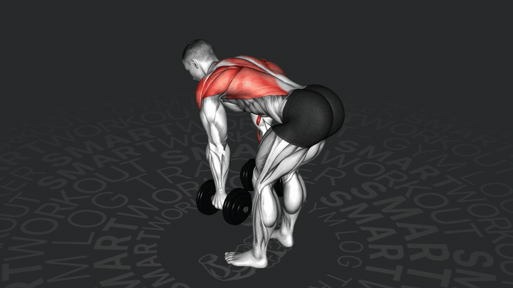
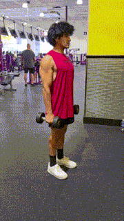
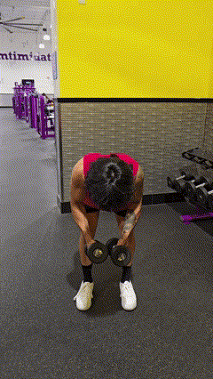
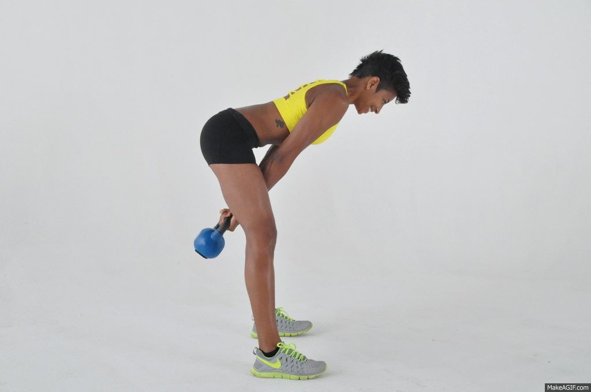
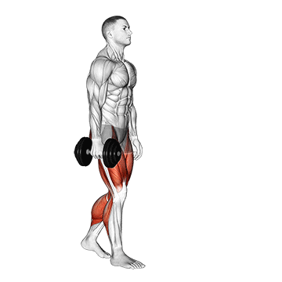
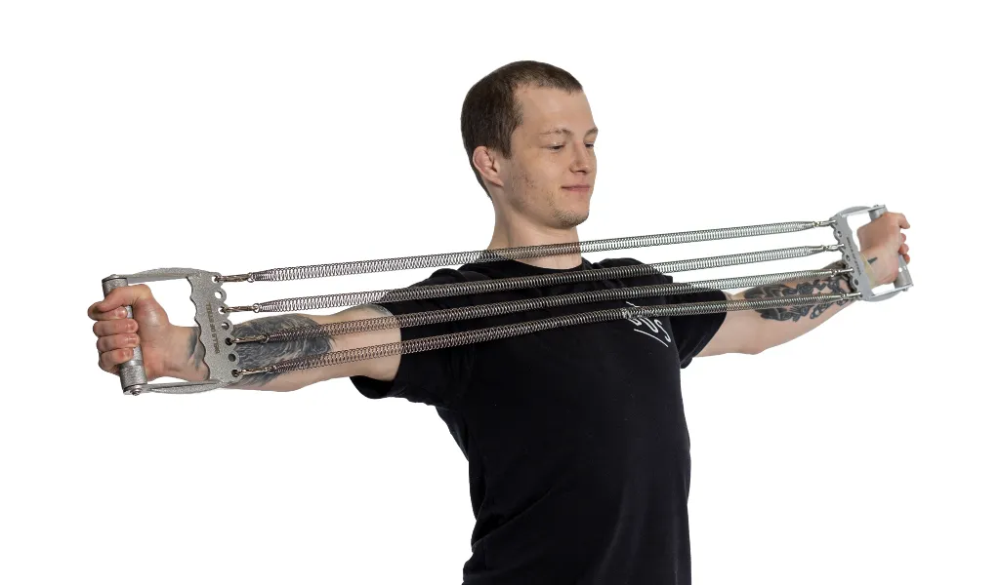

Plecy
Wiosłowanie hantlami / sztangą
Najważniejsze ćwiczenie pod plecy. Pochyl się, plecy neutralnie, ciągnij do bioder i ściągaj łopatki.
Cel: bicek, mocniejsze plecy, lepsza postawa i trochę klatki. Bez ćwiczeń leżących. Sprzęt: hantle łączone w sztangę, expandery ze sprężynami i kettlebell.

Najważniejsze ćwiczenie pod plecy. Pochyl się, plecy neutralnie, ciągnij do bioder i ściągaj łopatki.

Neutralny chwyt. Dobre na grubość ramienia i zwykle łagodniejsze dla nadgarstków niż klasyczny curl.

Lekkie hantle, kontrolowany ruch. To ćwiczenie robi dużo dla postawy i barków po siedzeniu.

Hantle albo złączona sztanga. Biodra idą do tyłu, plecy neutralnie. Masz czuć tył uda i pośladki.

To nie jest przysiad. To zawias biodrowy: biodra w tył, dynamiczny wyprost, brzuch napięty.

Kettlebell w jednej ręce. Idziesz albo stoisz prosto. Nie przechylaj się na bok.

Ręce przed sobą, rozciągnij expander na boki. Cel: łopatki i tył barku, nie ego lifting.
Łokieć blisko ciała, obracasz przedramię na zewnątrz. Ma być lekko i dokładnie.

Łokieć na futrynie, delikatnie skręć ciało. Bez bólu w barku.
| Dzień | Plan | Uwagi |
|---|---|---|
| Poniedziałek | Trening A | Plecy + biceps |
| Środa | Trening B | Tył ciała + klatka + core |
| Piątek / sobota | Trening A albo B | Wybierz ten, który mniej robiłeś |
| Codziennie | Mini reset 5 minut | Pull apart / rotacje / rozciąganie klatki |
/gifsbent_over_row.gifspring_expander_row.gifhammer_curl.gifreverse_fly.gifromanian_deadlift.gifkettlebell_swing.gifstanding_expander_chest_press.gifkettlebell_suitcase_carry.gifspring_expander_pull_apart.gifstanding_shoulder_external_rotation.gifchest_doorway_stretch.gif| Co robi największą robotę | Dlaczego |
|---|---|
| Hammer curls | Budują grubość ramienia i zwykle są łagodniejsze dla nadgarstków. |
| Wiosłowanie | Poszerza górę sylwetki i sprawia, że ręce wyglądają większe. |
| Reverse fly | Buduje tył barków i poprawia postawę przy pracy siedzącej. |
| Regularność | 3× tygodniowo po 20–35 minut działa lepiej niż jednorazowe katowanie się. |
| Wolne opuszczanie ciężaru | Przy domowym sprzęcie mocno zwiększa bodziec dla mięśni. |
| Przykład progresu | Cel |
|---|---|
| 10 kg × 10 powt. | Punkt startowy |
| 10 kg × 15 powt. | Więcej objętości |
| 12 kg × 10 powt. | Zwiększenie obciążenia |
| Kiedy widać efekty | Orientacyjny czas |
|---|---|
| Lepsze napięcie mięśni | 2–4 tygodnie |
| Widoczna poprawa sylwetki | 6–10 tygodni |
| Realnie większe ręce | 3–6 miesięcy |